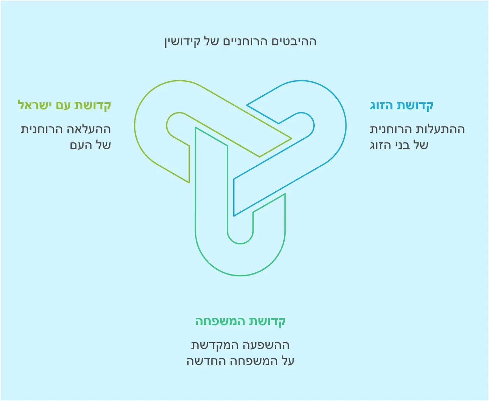

העומק הנפלא בשם "קידושין": מבט פנימי על קדושת הנישואין
יסוד נפלא מתגלה לנו בבחירת חז"ל לקרוא למסכת בשם "קידושין". לכאורה, היה מקום לקרוא למסכת "אישות" או "נישואין", שהרי המשנה פותחת ב"האשה נקנית". אך חז"ל, בעומק חכמתם, ביקשו להאיר לנו אור חדש במהות הקשר הזה.
העומק שבבחירת השם
כאשר חז"ל בוחרים שם למסכת, אין זו בחירה מקרית. השם "קידושין" מלמד אותנו שעיקר מהות הנישואין אינה בקניין הממוני או המשפטי, אלא בהתקדשות - בהתעלות רוחנית של שני בני הזוג.
ברכת "מקדש עמו ישראל"
ועתה נבין עומק חדש בברכת "מקדש עמו ישראל על ידי חופה וקידושין". אין זו רק ברכה על מעשה הנישואין, אלא הכרה עמוקה בכך שדרך מעשה הקידושין, עם ישראל כולו מתקדש ומתעלה. כל חתונה יהודית היא המשך ישיר למעמד הר סיני, שבו נתקדש עם ישראל להיות עם סגולה.
מעגלי הקדושה
וכך מתגלים שלושה מעגלי קדושה:
- קדושת הזוג - המתקדשים זה לזו
- קדושת המשפחה - הבית החדש שנבנה בקדושה
- קדושת עם ישראל - שמתעלה בכל נישואין חדשים
התיקון השלם
ואולי יש כאן תיקון עמוק לחטא אדם הראשון. כי כאשר אנו מדגישים את הקדושה שבנישואין, אנו מתקנים את אותה כפיות טובה ראשונית, ומכירים בעומק המתנה האלוקית של "עזר כנגדו".
הרי לנו שבחירת השם "קידושין" אינה רק עניין טכני, אלא מאירה את כל מהות הנישואין באור חדש של קדושה והתעלות. האין זה מופלא?
